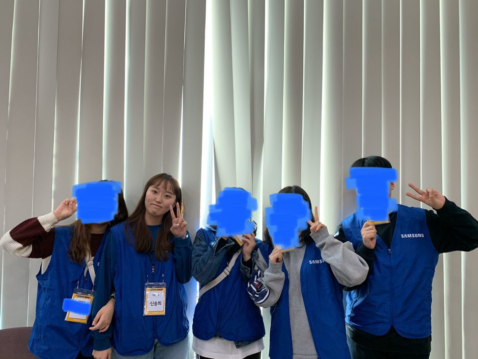
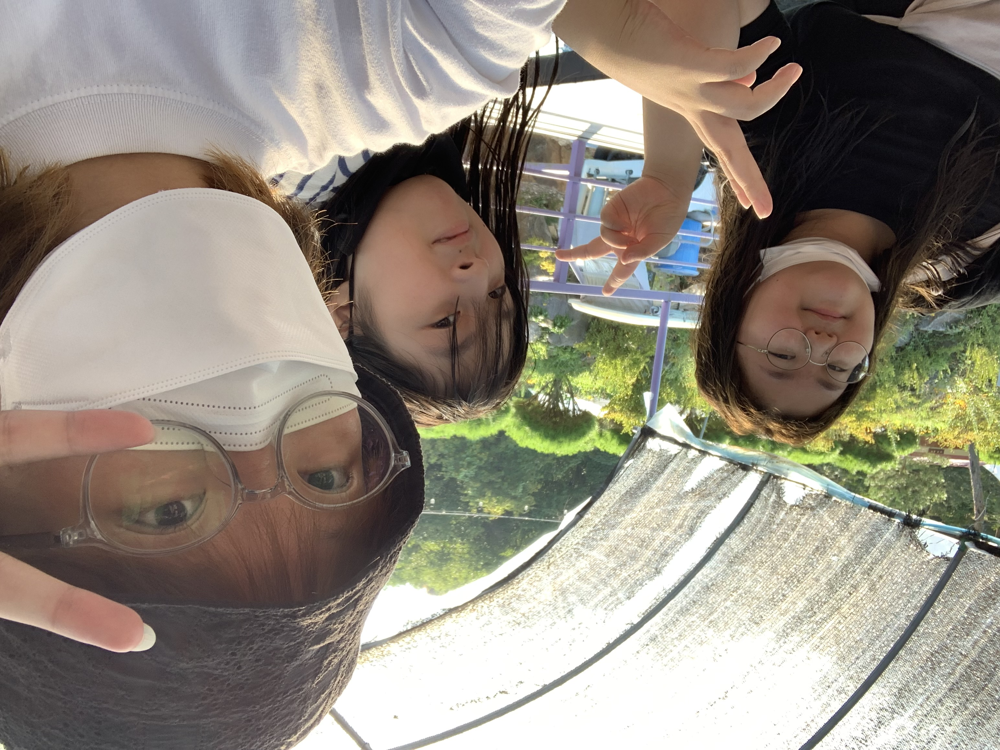

2. 취미
|  |
저는 봉사활동을 정말 좋아합니다. 다른 사람에게 말하면 “그 시간에 아르바이트나 하지. 왜 봉사활동해?”라는 말을 듣고는 하지만 봉사자로서 타인을 위한 시간에 대해 행복과 즐거움을 느껴 봉사활동을 즐겨 하고 있습니다. 처음으로 시작한 봉사활동은 초등학생을 대상으로 종이접기나 비즈 공예, 클레이 공예 등을 가르쳐주면서 함께 멋진 결과물을 만들어내는 재능 기부 형태의 봉사활동이었습니다. 무언가를 만들어내고, 공예에 대해 배우는 것을 좋아해서 시작한 봉사인데, 다들 너무 좋아해주어서 더 힘을 얻고 꾸준히 할 수 있었습니다. |
|
단지 봉사 시간이 필요해서 봉사활동을 하기보다는 그 시간동안 타인을 비롯한 제 자신에게도 도움이 되고 행복이 된다는 것을 알게 되었습니다. 대학에 입학한 이후에는 시간적인 문제로 지속적인 봉사활동이 불가능하여 따로 홈페이지를 통해 시간이 나는 대로 틈틈이 신청하고 있습니다. 졸업 이후에는 봉사단체에 가입하여 꾸준히 봉사하는 사람이 되고 싶다는 바람이 있습니다. |
 |